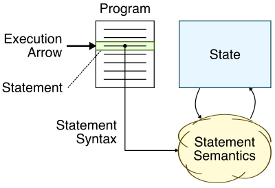

Topic 1: Introduction to C¶
This topic will provide a gentle introduction to procedural programming using the C programming language. C has a long history of use in computer systems programming which involves developing software to connect the low-level computer hardware to high-level, user-facing application software. Computer systems programming usually requires careful consideration of performance and resource constraints. Examples of computer systems software include compilers, operating systems, databases, numerical libraries, and embedded controllers. C was developed in the early 1970s at Bell Laboratories by Ken Thompson, Dennis Ritchie, and many others. C was originally developed for the purposes of writing an early version of the Unix operating system. The Linux operating system which you will be using in the programming assignments was inspired by these original versions of Unix, and the Linux kernel is also written in C. C provides a nice balance between high-level abstractions for productive software development and low-level control over the hardware, and thus it remains one of the primary languages chosen by computer systems programmers.
We will assume students have taken an introductory programming course in a dynamic programming language (e.g., Python, MATLAB). This means we are assuming students are familiar with basic programming constructs such as variables, literals, operators, expressions, functions, conditional statements, and iteration statements. Therefore this topic will focus more on the specifics of C syntax and a precise way of illustrating execution semantics which we will use throughout the rest of the course. We will also start by focusing more on (precisely) reading C programs than on writing C programs. Just as when learning a foreign language, one must learn how to read before one can learn how to write!
1. Statements, Syntax, Semantics, State¶
At a fundamental level, any procedural program can be defined by the four S's: statements, syntax, semantics, and state. The following diagram illustrates the interaction between the four S's.

Let's start with an example based on the English language. A program is a sequence of statements. For example the following might be an English language program:
- Put the letter in the envelope.
- Seal the envelope.
- Address the envelope.
- Put a stamp on the envelope.
- Put the envelope in the mailbox.
In this context, a statement is just an English language sentence. For example, "Put the letter in the envelope." is a statement. The syntax is the proper English language grammar required for forming valid sentences. For example, syntax tells us that the first word of a statement should start with a capital letter, that a verb should have proper tense, and a statement should end with an appropriate choice of punctuation. The semantics is the meaning of a sentence. For example, semantics tells us that a letter is a "written, typed, or printed communication, especially one sent in an envelope by mail or messenger", and the semantics also help us understand that putting a letter in an envelope makes sense. The statement "Put the elephant in the envelope." would be syntatically correct but would not make much semantic sense. Finally, the state involves the memory of prior statements (i.e., the state of the world) as we read or "execute" these statements. To execute a statement, we use the syntax and semantics to understand how that statement changes the state of the world. The "execution arrow" points to the current statement we are reading or executing. So in this example, the state captures the current status of the envelope. Is the envelope sealed? Is it addressed? Does it have a stamp on it? Is it in the mailbox? Here is a quick summary of the four S's:
- Program: sequence of statements
- Statement: sentence
- Syntax: sentence grammar
- Semantics: sentence meaning
- State: memory of prior statements
When executing a program we often want to be more precise on exactly how a program's syntax and semantics modify the state. We will use state diagrams as a way to capture a program's execution precisely. Although drawing these diagrams may initially seem overly tedious, it is critical that students master this skill early. By the end of the course we will be drawing very complicated state diagrams to precisely demonstrate our understanding of the syntax and semantics of sophisticated programming paradigms; but this is only possible if students work on mastering this skill right from the beginning of the course.
The following is an example of a state diagram for executing a simple English program with five statements.
FIG
Each statement includes a prefix with a line number and small set of boxes, and there is space on the right to capture the state of the program. To execute this program we simply use the following steps:
- Identify which statement the execution arrow is pointing to
- Use the syntax and semantics to understand how executing this statement will change the state of the program
- Update the state accordingly using the space on the right
- Cross off the box to the left of this statement
- Advance the execution arrow to point to the next statement
While we have explored statements, syntax, semantics, and state in the context of an English language program, our understanding applies equally well to computer languages. In the rest of this topic, we will learn the basics about statements, syntax, semanatics, and state in the C programming language.
2. Variables, Literals, Operators, Expressions¶
We begin by exploring the statements, syntax, semantics, and state associated with four fundamental C concepts: variables, literals, operators, and expressions.
- Variable: a box (in the computer's memory) which stores a value; variables have names and are used for "state"
- Literal: value written exactly as it is meant to be interpreted; a literal is not a name, it is the value itself
- Operator: symbol with speical semantics to "operate" on variables and literals
- Expression: combination of variables, literals, and operators which evaluates to a new value
2.1. Variables¶
A variable is a box in the computer's memory which stores a value. It is critical to keep the concept of a variable separate from the concept of a value. A variable is not a value. A variable stores a value. The name of a variable is called its identifier. In C, identifiers can include lowercase letters, uppercase letters, numbers, and underscores. However, identifiers cannot start with a number. These rules are part of the C syntax for identifiers. The following is a list of valid identifiers (i.e., correct syntax):
1 2 3 4 5 6 7 8 | my_variable MY_VARIABLE myVariable MyVariable variable_0 variable_1 _variable __variable__ |
The following is a list of invalid identifiers (i.e., incorrect syntax):
1 2 | 0_variable variable$1 |
The first identifier has invalid C syntax since it starts with a number,
and the second identifier has invalid C syntax since it includes the $
character. These are called synatx errors.
There are many styles of identifiers. For example, snakecase favors
using lowercase with underscores to separate words (i.e., my_variable),
while camelcase favors using lowercase with uppercase to separate words
(i.e., myVariable, MyVariable). Often we might favor using uppercase
with underscores to indicate constant variables (i.e., MY_VARIABLE),
and we might favor using leading and training underscores to indicate
special internal variables (i.e., __variable__). Note that the C
compiler does not care about which valid identifier a programmer uses to
name any given variable. So why not simply name each variable a0, a1,
a2, etc? While the C compiler does not care, the reader of your
program definitely cares about which valid identifiers a programmer
uses. Careful and consistent selection of identifiers can significantly
improve the readability of your programs, which in turn makes your
programs easier to debug, maintain, and extend. It is also important to
note that in practical situations the programmer actually does not get to
choose his or her own coding style (or coding conventions). A company or
open-soruce project will usually have its own coding conventions that it
expects its developers to follow. Similarly, in this course we have our
own coding conventions that we expect students to follow. The coding
conventions are located here:
All variables also have a type. The type specifies the kind of values
that can be stored in a variable. In dynamically typed languages (e.g.,
Python, MATLAB) the "types" of variables are not be known until run time
(i.e., dynamically), while in statically typed languages (e.g., C, C++)
the "types" of variables must be known at compile time (i.e.,
statically). This is an absolutely critical distinction that also has
fundamental implications with respect to the tension between
productivity- vs. efficiency-level languages. We will learn more about C
types in Topic 3. For now, we will only use variables of type int which
can store signed integer values. Signed integers include zero, negative
whole numbers, and positive whole numbers.
We can now introduce our very first example of a C statement. A variable declaration statement is used to create a new variable with a specific name and type. The following is a list of valid variable declaration statements:
1 2 3 4 5 6 7 8 | int my_variable; int MY_VARIABLE; int MyVariable; int myVariable; int variable_0; int variable_1; int _variable; int __variable__; |
Each statement creates a new box to hold a value of type int. Note that
C syntax requires all C statements to end in a semicolon. Forgetting to
include the semicolon is a syntax error (meanning the C compiler cannot
understand the syntax).
These boxes are initially undefined which is not a problem, but using an undefined variable has undefined semantics. What does it mean for something to have undefined semantics? If something has undefined semantics it could: display an error, cause your program to crash, cause your program to execute as expected, delete your hard drive, or crash your entire computer. So we should avoid doing anything which has undefined semantics. However, this begs the question, why does the C programming language even include undefined semantics? Why doesn't the C programming language specify that these uninitialized variables are automatically initialized to zero? This would certainly avoid undefined semantics and many common bugs. Recall that C is a computer systems programming language optimized for efficiency. Automatically initializing variables to zero would add a small but non-trivial overhead which could quickly have an impact on the overall performance of your programs. When faced with a choice between safety and efficiency, the C programming language will almost always choose efficiency. This is why it is an efficiency-level language! However, this also means that C programmers must be very careful in how they write their programs to avoid undefined behavior at all costs.
2.2. Literals¶
A literal is a value written exactly as it is meant to be interpreted. Contrast a literal to a variable. A variable is a name for a box that can hold many different values (all of the same type!). A constant variable is a name for a box that can hold a single (constant) value. A literal is not a name; it is not a variable. A literal is literally the value itself. Here are some example integer literals:
1 2 3 4 | 42 -42 0x42 0xcafecafe |
The integer literal on line 1 is literally the number 13 in base 10. The
integer literal on line 2 is literally the number -42 in base 10. The
integer literal on line 3 is literally the number 42 in base 16 (i.e., 66
in base 10). Finally, the integer literal on line 4 is literally a large
number in base 16. Notice that C syntax specifies that by default integer
literals are assumed to be base 10, but if the number includes a 0x
prefix then the integer literal is in base 16.
2.3. Operators¶
An operator is a symbol with special semantics to "operate" on variables
and literals. The very first operator we will study will be the
assignment operator represented with the equal symbol (=). The
assignment operator "assigns" a new value to a variable (i.e., puts a
value into the variable's box).
This brings us to our second example of a C statement. An assignment statement combines the assignment operator with a left-hand side (LHS) and a right-hand side (RHS). The LHS specifies the variable to change, and the RHS specifies the new value (possibly using a literal). Here is an example of a program with two statements:
1 2 | int my_variable; my_variable = 13; |
The first line is a variable declaration statement, and the second line is an assignment statement. The semantics are that the first statement creates a box in the computer's memory, and the second statement stores the value 13 in that box.
A variable declaration statement and an assignment statement can be combined into a single initialization statement. Here is an example of the same program implemented with a single statement:
1 | int my_variable = 13; |
We have now learned about three kinds of C statements: variable declaration statements, assignment statements, and initialization statements. It is important to distinguish between these three kinds of statements, especially since in C++ each of these three kinds of statements can result in quite different semantics.
There are many other operators besides the assignment operator. For
example, there are arithmetic opeators for addition (+), subtraction
(-), multiplication (*), division (/), and modulus (%).
All of these operators can operate on integer values. We will discuss in
Topic 3 subtle issues related to the fact that the computer can only
represent integer values up to a specific minimum and maximum value. Note
that the division operator (/) is for integer division meaning that 6
/ 2 is 3 and 5 / 2 is 2 not 2.5. So the result of an integer division is
always rounded towards zero, or in other words the fractional part is
simply removed (truncated). Why does the C programming language round
towards zero? Why not round to the nearest whole number? Again the C
programming language is choosing efficiency; it is slightly more
efficient to simply remove the fractional part vs other rounding schemes.
2.4. Expressions¶
An expression is a combination of variables, literals, and operators which evaluates to a new value. A variable's indentifier is actually an expression that evaluates to the value stored in that variable. Here is an example of an expression:
1 | 5 - 3 |
This expression evaluates to the value 2. Here is another expression:
1 | 8 / 2 * 2 + 2 |
This expression can evaluate to different values depending on the order in which we aply the sequence of operators. Here are several options:
1 2 3 4 5 | ((8 / 2) * 2) + 2 evaluates to 10 (8 / 2) * (2 + 2) evaluates to 16 8 / (2 * (2 + 2)) evaluates to 1 (8 / (2 * 2)) + 2 evaluates to 4 8 / ((2 * 2) + 2) evaluates to 1 |
Note that the final expression evaluates to 1.33 but since this is the integer division we round towards zero resulting in a value of 1. The C programming language includes semantics to unambiguously specify the correct answer based on an operator precedence table. Here is an initial version of this table which just includes the operators we have already learned about in this topic.
| Category | Operator | Associativity |
|---|---|---|
| Multiplicative | * / % |
left to right |
| Additive | + - |
left to right |
| Assignment | = |
right to left |
Early rows have higher precedence than lower rows. So the multiplicative operators have the highest precedence and then the additive operators. The associativity column indicates the order to apply the operators when those operators are at the same precedence. So for the above example, we first consider the multiplicative operators and then move from left to right applying those operators. So we apply the division operator first, then the multiplication operator, and finally the lower precedence addition operator:
1 | ((8 / 2) * 2) + 2 = 10 |
Note that all operators are included in the precedence table, even the assignment operator. Since the assignment operator is the last row it has the lowest precendence. This means evaluate the LHS and RHS of the assignment operator first before doing the actual assignment. Here is an example:
1 | x = 5 - 3 |
We apply the subtraction operator first and so the LHS evaluates to the
value 2. Then we apply the assignment operator which sets the value of
variable x to be 2. Note that every expression evaluates to a value,
and since x = 5 - 3 is an expression then it to evaluates to a value.
The C programming language specifies that the value of applying the
assignment operator is the value of the LHS. This enables complicated yet
syntatically correct expressions such as:
1 | y = x = 5 - 3 |
As before, the addition operator has the higher precendence and so the
LHS evaluates to the value 2. We are left with two assignment operators
and the precendence table specifies that the corresponding associativity
is right to left. So the next step is to apply the second assignment
operator, meaning we set the value of variable x to be 2. The value of
the expression x = 5 - 3 is the value of the RHS which is 2, so this
means the value of the RHS for the first assignment operator is also 2.
Applying the first assignment operator sets the value of variable y to
2. In other words, this expression sets the value of both variable x
and y to 2.
One key take-away from this discussion is that while an expression might be syntatically correct, it doesn't mean that it is readable. We should always prefer explicitly using parenthesis to indicate the desired order of operations.
2.5. Simple C Program¶
1. C Basics¶
1.1. Using Compiler Explorer and Repl.it to Experiment with C Programs¶
Compiling a C program can be challenging, since it usually involves
multiple command line tools and steps. So to get started, we will be
using two online tools which will enable us to quickly experiment with
small C programs. Later in the tutorial, we will see how to compile,
build, test, debug, and evaluate both small and large C programs on the
ecelinux machines.
The first online tool is called Compiler Explorer, and it is accessed
through the following link: https://godbolt.org. You can enter simple
C functions in the left text box, and then Compiler Explorer will display
the corresponding machine instructions (i.e., assembly code) in the right
text box. This is a great way to quickly use your browser to see the
connection between C programs and the low-level computer hardware.
Compiler Explorer color codes the C program and the machine instructions,
so it is possible to see which C statements compile into which machine
instructions. There is a drop-down menu to choose different compilers.
Choosing x86-64 gcc 7.2 roughly corresponds to the compiler we will be
using on the ecelinux machines which is based on the Intel x86-64
instruction set. Choosing MIPS gcc 5.4 (el) roughly corresponds to the
compiler used in ECE 2300 which is based on the MIPS instruction set.
There is also a text box where you can enter various compiler command
line options.
The second online tool is called Repl.it, and it is accessed through the following link: http://repl.it. You can create a new "repl" by choosing the C programming language. You can enter simple C programs in the left text box. Clicking on the run button will first compile the C program into an executable binary, and then run this executable binary. This is a great way to quickly experiment with C programs in your browser. The output of running the program is shown in the right text box.
C Functions¶
The definition for a simple function to calculate the average of two integers is shown below.
1 2 3 4 5 | int avg( int x, int y ) { int sum = x + y; return sum / 2; } |
A C function definition specifies a named parameterized sequence of
statements. C function definitions have four parts: a function name
(e.g., avg on Line 1; a function parameter list (e.g., int x, int y
on Line 1); a function return type (e.g., int at the beginning of
Line 1); and the function body (e.g. Lines 2-5). In this tutorial, we
will only use the int type for variables, but the C language supports a
rich selection of different types for representing integer numbers, real
numbers, characters, pointers, and composite structures. A function
creates a new block and all variable declarations within the function are
local to that scope. Line 3 is a variable initialization statement which
first creates a new variable of type int named sum and then
initializes this variable with the value of the expression x+y.
Remember that all C statements end in a semicolon (;). Line 4 is a
return statement which causes the function to return the value of the
corresponding expression (e.g., sum/2). Calling a C function involves
setting the parameters in the parameter list, executing the sequence of
statements in the function body, and then returning the return value. A C
function call is just another kind of expression which evaluates to the
function's return value.
Enter the avg function into Compiler Explorer and take a look at the
corresponding machine instructions for the Intel x86-64 instruction set.
The avg function compiles to 15 machine instructions. In this course,
you are not responsible for understanding these machine instructions, but
it is still very important to recognize that C programs usually map
relatively directly to machine instructions. Notice that the statement on
Line 3 maps to four machine instructions (the C statement and the machine
instructions are all colored yellow) including an add instruction. If
you right click on one of the Intel x86-64 machine instructions and
choose View Asm Doc, Compiler Explorer will display a detailed
description of that machine instruction. Try finding out more about the
add instruction. This instruction directly corresponds to the +
operator in the avg function; this direct mapping from high-level
syntax to low-level machine instructions is one of the key features of C.
The + operator in a language such as Python or MATLAB would eventually
correspond to hundreds of machine instructions! Enter -O3 into the
Compiler options... text box and press return. This option tells the
compiler to apply various optimizations to improve the performance of the
compiled machine instructions. The avg function now compiles to six
machine instructions, and we can see that Line 3 now maps to a single
machine instruction (the C statement and the machine instruction are both
are colored green). Even without understanding the details of these
machine instructions, it should be obvious that reducing the number of
machine instructions from 15 to six should improve performance.
The definition for a simple main function to call the avg function and then print its result is shown below.
1 2 3 4 5 6 7 8 9 10 11 12 13 14 15 16 | #include <stdio.h> int avg( int x, int y ) { int sum = x + y; return sum / 2; } int main() { int a = 10; int b = 20; int c = avg( a, b ); printf( "average of %d and %d is %d\n", a, b, c, ); return 0; } |
Recall that the main function is special. The main function is always
where program execution starts; in other words, the main function is
always the first function to be called in any C program. Lines 11-13 are
variable initialization statements. Line 13 calls the avg function with
the values in variables a and b, and then the return value is used to
initialize variable c. Line 14 calls the printf function to display
text on the screen. The printf function is defined in the C standard
library which is usually included along with every C compiler. More
specifically, the printf function declaration is in a separate header
file which is included on Line 1 using the C preprocessor. We will learn
more about the C preprocessor later in this tutorial. The printf
function always takes a format string as the first parameter, and then
takes a variable number of parameters that are evaluated and substituted
into the format string. The format string includes format specifiers
(i.e., special codes) to indicate where to substitute these values. In
this example, we are using the %d format specifier to indicate that we
would like to substitute an integer into the format string. The format
string can also include other special codes; for example, this format
string includes a newline special code (\n) which results in a line
break. The return value of the main function is used as the exit
status of the program; this is a way for a C program to tell the
operating system whether or not the program ended successfully (by
returning zero) or something went wrong (by returning a non-zero value).
Enter the avg and main functions into Repl.it and then use the run
button to compile and execute this C program. Try initializing a to 10
and b to 15. The average of these two integers is 12.5, but our program
currently does not support arithmetic on non-integer values. In this
case, the division operator (i.e., /) truncates the result by always
rounding towards zero. Quickly experimenting with small C programs can
help illustrate subtle issues in C syntax and semantics.
Question
Write a simple function named avg3 to average three integers. Use
Compiler Explorer to examine the corresponding machine instructions
and identify how the + operators in the C program maps to add
machine instructions. Use Repl.it to compile and execute a program
with the avg3 function and a main function to call the average
function and print its result. Experiment with averaging negative
numbers, especially negative numbers where ideally the result would
not be an integer (e.g., -7, -5, and -4).
Problem 1.1: Writing an avg3 function
Here is a programming question